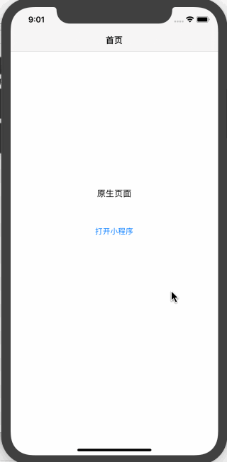

简介
uni小程序SDK，是为原生App打造的可运行基于uni-app开发的小程序前端项目的框架，从而帮助原生App快速获取小程序的能力，效果如下：

基本概念
uni-app
首先您需要了解什么是uni-app，uni-app 是一个使用Vue.js 开发所有前端应用的框架，开发者编写一套代码，
可发布到 H5、以及各种小程序（微信/支付宝/百度/头条/QQ/钉钉/淘宝）、快应用等多个平台，并且在HBuilderX 中可直接打包生成 Android、iOS App。
了解更多关于uni-app 请点击查看uni-app 官网。
uni小程序SDK
uni小程序SDK是原生SDK，提供 Android 版本 和 iOS 版本，需要在原生工程中集成，然后即可运行用uni-app框架开发的小程序前端项目，一套代码两端运行
名词解释
- 宿主：想要构建小程序的原生App，集成uni小程序SDK的宿主
- 小程序：运行在宿主中的前端代码编写的小程序项目，使用 uni-app 框架开发
- wgt：小程序应用资源包，即使用 uni-app 框架开发的项目，导出的小程序应用资源包
- HBuilderX：开发 uni-app 的 工具
注意
- uni小程序SDK 仅支持使用 uni-app 开发的小程序，不支持纯 wxml 微信小程序运行。但 uni-app 支持使用 wxml 格式的小程序组件。
- uni小程序SDK 仅支持 uni-app 的 v3 编译器。使用老版的开发者，需首先保障应用可以运行在 v3 编译模式下。
特色
特色
uni-app 在 app 端是双渲染引擎，可以像微信那样使用webview渲染，也可以使用改造版的weex进行原生渲染。
其中 webview 渲染在 Android 上也同时支持系统webview渲染和x5渲染。
- 性能 uni小程序sdk的性能，与uni-app的app端v3编译器相同，性能超过市面其他小程序引擎。在启动速度、页面加载速度、逻辑层与视图层通信优化等方面均优有更优秀的表现。
- 功能 uni小程序sdk的功能，与uni-app的app端功能相同，所有原生能力均可调用。不同于小程序的限制和有限API，uni小程序sdk的功能更加强大。
- 插件生态uni-app插件市场有大量丰富的插件。